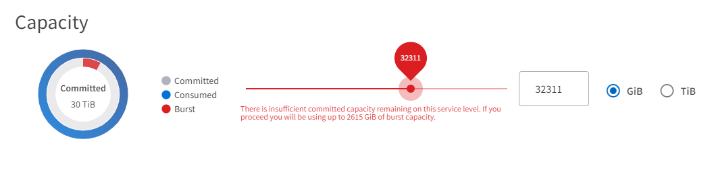

Dokumentationsänderungen beantragen
Dokumentationsänderungen beantragen In GitHub bearbeiten
In GitHub bearbeiten Leitfaden für Beitragende
Leitfaden für BeitragendeAbrechnung von Konten, Abonnements, Services und Performance
Beitragende
Ein Abonnement-Speicherdienst wird an ein Abrechnungs-Konto abgerechnet. Jedes Rechnungskonto ist mit einem Mandanten verknüpft. Ein Rechnungskonto kann für ein oder mehrere Abonnements in Rechnung gestellt werden.
Ein Abonnement bezieht sich auf eine Gruppe von Speicherservices, die als ein Paket abonniert und abgerechnet werden. Ein Abonnement:
-
Verfügt über einen oder mehrere Storage-Services
-
Verfügt über eine festgelegte Dauer mit einem Enddatum des Abonnements
-
Sie können Add-ons haben, die dem Abonnement zugeordnet sind

|
Wenn Storage in mehreren Datacentern benötigt wird, ist für jedes Datacenter ein separates Abonnement erforderlich, das separate Verpflichtungen enthält. |
Ein Storage-Service ist eine abonnierte Storage-Kapazität mit einem damit verbundenen Performance-Niveau. Die NetApp Service Engine bietet Storage auf Datei- und Block-Ebene mit extrem hohem Tiering, Premium-Tiering und Standard-Performance-Leveln sowie Objekt-Storage auf einem Objekt-Performance-Service-Level.
Dank der hohen Tiering- und Premium-Tiering-Performance können Sie Ihren Storage-Bedarf und die damit verbundenen Kosten reduzieren, indem Sie Ihre kalten oder inaktiven Daten auf kostengünstige Objekt-Storage-Tiers überwachen und per Tiering verschieben. Die Tiering-Richtlinie ist auf automatisch festgelegt. Dabei werden Daten, die 31 Tage lang inaktiv geblieben sind, standardmäßig verschoben. Sie können diesen Zeitraum für eine beliebige Anzahl von Tagen von 3 bis 61 Tagen ändern.
Bei ihrer Erstellung sind Datei- und Block-Storage-Elemente mit einem Performance-Level verknüpft. Bei sich ändernden Anforderungen ist das Verschieben von Workloads zwischen Performance-Service-Leveln möglich. Das extreme extreme Tiering, Premium, Premium-Tiering und Standard-Performance Level bieten unterschiedliche Stufen der I/O-Performance (IOPS) und des Durchsatzes (MB/s), sodass der Storage individuell auf die Anforderungen zugeschnitten werden kann.
Die Burst-Nutzung ist für Dienste bis zu einem bestimmten Zeitpunkt zulässig; sie wird zu separaten Tarifen überwacht und abgerechnet (wie im Abonnement definiert). Weitere Informationen über Kapazität und Auslastung finden Sie unter "Engagierte, verbrauchte und Burst-Kapazitäten und übermäßige Nutzung". DP-Services, die Backups und Disaster Recovery unterstützen, werden ebenfalls angeboten.
Engagierte, verbrauchte und Burst-Kapazitäten und übermäßige Nutzung
Verbrauchte Kapazität ist die Menge an Kapazität, die zugewiesen wurde (aber nicht unbedingt verwendet). Die zugesetzte Kapazität ist die in einem Abonnement festgesetzte Kapazität. Der Abonnent wird unabhängig von der genutzten Kapazität mit einem festen Satz in Rechnung gestellt.
Burst-Kapazität ist die Kapazität, die über der zugewiesenen Kapazität liegt.
Burst-Kapazität = verbrauchte Kapazität – engagierte Kapazität
Die NetApp Service Engine überwacht die verbrauchte Kapazität, überprüft die Nutzung mit dem Abonnement und berechnet alle verbrauchten Kapazitäten, die über der festgelegten Burst-Rate liegen. Die Nutzung wird in fünf-Minuten-Schritten erfasst und eine tägliche Zusammenfassung zur Berechnung der Burst-Kosten an die Rechnungmaschine übermittelt. (Die Abrechnungszeit richtet sich nach der lokalen Zeit für die zugrunde liegende Infrastruktur für die Installation der NetApp Service Engine. )
|
|
Neben dem primären Storage tragen Funktionen wie Snapshots, Backup und Disaster Recovery-Replikate dazu bei und werden bei den Nutzungsberechnungen berücksichtigt. |
Benachrichtigungen über Burst-Nutzung
Aufgrund von zusätzlichen Kosten für Burst-Nutzung wird die NetApp Service Engine GUI angezeigt:
-
Eine Benachrichtigung, wenn eine vorgeschlagene Änderung bei der Bereitstellung zur Nutzung von Burst-Kapazität führt.
-
Eine Benachrichtigung an einen Administrator des Kunden, wenn ein Abonnement in den Burst-Einsatz gegangen ist.
-
Wie viele Tage und in welcher Menge Burst-Nutzung wurde für einen Service verwendet?, finden Sie im Kapazitätsbericht. Weitere Informationen finden Sie unter "Kapazitätsauslastung".
Sie erhalten eine Benachrichtigung, wenn eine vorgeschlagene Änderung die Nutzung von Burst-Kapazität zur Folge hat
Diese Abbildung zeigt ein Beispiel für eine Benachrichtigung, die angezeigt wird, wenn eine vorgeschlagene Bereitstellungsänderung dazu führt, dass ein Abonnement in den Burst-Wert geht. Sie können sich entscheiden, weiterhin zu wissen, dass das Abonnement in Burst gesetzt wird, oder sich entscheiden, nicht mit der Aktion fortzufahren.

In der folgenden Tabelle werden die Benachrichtigungen für derartige Burst-Meldungen angezeigt.
| Aktion | Auswirkung auf die Quelle | Auswirkungen auf das Ziel |
|---|---|---|
Erstellen oder Ändern der Größe einer Freigabe/Festplatte |
Übertrifft die Verpflichtung auf dem Service-Level in der Zone. |
k. A. |
Verschieben Sie Freigaben/Festplatten auf ein neues Service-Level. |
Übertrifft die Verpflichtung auf dem Service-Level in der Zone. |
k. A. |
Erstellen oder Ändern von Freigaben/Festplatten auf einem Dateiserver/Block-Storage mit aktiviertem Disaster Recovery |
|
Übertrifft die Verpflichtung auf dem Service-Level in der Zielzone durch die automatisch erstellte Zielfreigabe/Festplatte. |
Verschieben Sie Freigaben/Festplatten auf ein neues Service-Level auf einem Dateiserver/Block-Speicher, wobei Disaster Recovery aktiviert ist. |
|
Übertrifft das Engagement auf dem Service-Level in der Zielzone durch die verschobenen Zielfreigabe/Festplatte. |
Ermöglichen Sie Backups auf Freigabe/Festplatte. |
Übertrifft die Verpflichtung von DP |
Übertrifft die Verpflichtung auf dem Service-Level in der Zielzone durch die automatisch erstellte Zielfreigabe/Festplatte. |
Erstellen Sie eine neue Mandantenfähigkeit für Objektspeicher. |
Die Verpflichtung zur Objektkapazität konnte überschritten werden. |
k. A. |
Erhöhung des Kontingents für die Mandanten des Objektspeichers |
Die Verpflichtung zur Objektkapazität konnte überschritten werden. |
k. A. |
Benachrichtigung, wenn das Abonnement in Burst ist
Das folgende Benachrichtigungsbanner wird angezeigt, wenn ein Abonnement im Burst ist. Die Benachrichtigung wird dem Administrator des Kunden für die Mandantenfähigkeit angezeigt und angezeigt, bis die Benachrichtigung bestätigt wird.

Datensicherung
DP bezieht sich auf Methoden, die Daten-Backups unterstützen und bei Bedarf die Möglichkeit zur Wiederherstellung bieten.
NetApp Service Engine DP Funktionen umfassen:
-
Snapshots von Festplatten und Shares
-
Backups von Festplatten und Shares (erfordert DP-Service im Rahmen des Abonnements)
-
Disaster Recovery für Festplatten und Freigaben (als Teil des Abonnements ist DP oder DP Advanced Service erforderlich)
Snapshots
Snapshots sind zeitpunktgenaue Kopien von Daten. Snapshots können geklont werden, um eine neue Festplatte zu bilden oder mit denselben oder ähnlichen Funktionen zu teilen.
Snapshots können entweder Ad-hoc oder automatisch nach Zeitplan erstellt werden, wie in einer Snapshot-Richtlinie definiert. Die Snapshot-Richtlinie bestimmt, wann Snapshots erfasst werden und wie lange sie aufbewahrt werden.
|
|
Snapshots tragen zur verbrauchten Kapazität eines Service bei. |
Backups
Beim Backup wird die Kopie eines Objekts erstellt, repliziert und in einer anderen Zone als der Originalzone gespeichert, wobei das jeweilige Protokoll aktiviert ist (nur bei Block-Storage) und nicht von MetroCluster aktiviert ist. NetApp Service Engine bietet Backups auf Datei- und Block-Storage (für ein DP-Service auf dem Abonnement erforderlich). Backups von Shares/Festplatten werden in der Backup-Zone auf der Tier mit der niedrigsten Performance (Standard) im Abonnement gespeichert.
Backups können zum Zeitpunkt der Erstellung einer neuen Freigabe/Festplatte konfiguriert oder zu einer vorhandenen Freigabe/Festplatte hinzugefügt werden.
Hinweise:
-
Backups werden zu einem festen Zeitpunkt um 0:00 UTC durchgeführt.
-
Backups werden gemäß der Definition der Backup-Richtlinien für die Freigabe/Festplatte durchgeführt. Die Backup-Richtlinie legt Folgendes fest:
-
Wenn Backups aktiviert sind
-
Die Zone, in die die Backups repliziert werden; eine Backup-Zone ist jede Zone in der NetApp Service Engine außer der Zone, in der sich der ursprüngliche Share oder Festplatte befindet, auf der das entsprechende Protokoll aktiviert ist (nur bei Block-Storage) und die nicht-MetroCluster aktiviert ist. Nach dem Festlegen kann die Sicherungszone nicht mehr geändert werden.
-
Die Anzahl der zu behaltenden Backups (Aufbewahrung) der einzelnen Intervalle (täglich, wöchentlich oder monatlich)
Geplante Backups werden regelmäßig erstellt und können nicht gelöscht werden, werden aber gemäß der Aufbewahrungsrichtlinie ausgealtert.
-
-
Backup-Replizierung erfolgt täglich.
-
Backups von Festplatten oder Freigaben können nicht in einer NetApp Service Engine-Instanz konfiguriert werden, die nur eine Zone enthält.
-
Wenn Sie eine primäre Freigabe oder ein primäres Laufwerk löschen, werden alle zugehörigen Backups gelöscht.
-
Backups tragen zur verbrauchten Gesamtkapazität bei. Darüber hinaus fallen bei Backups Kosten für den DP-Abonnementpreis an. Siehe auch "Datensicherung, verbrauchte Kapazität und Kosten".
-
Restore from Backup: Eine Service-Anfrage stellen, um eine Freigabe oder Festplatte aus dem Backup wiederherzustellen.
Disaster Recovery
Disaster Recovery bezieht sich auf die Möglichkeit einer Recovery auf normalen Betrieb bei einem Notfall.
Die NetApp Service Engine unterstützt zwei Arten der Disaster Recovery: Asynchron und synchron.
|
|
Der Support für Disaster Recovery hängt von der Infrastruktur ab, die von der NetApp Service Engine Instanz unterstützt wird. |
Disaster Recovery – asynchron
Die NetApp Service Engine unterstützt asynchrone Disaster Recovery mit folgenden Funktionen:
-
Asynchrone Replizierung von primären Volumes in eine Disaster-Recovery-Zone
-
Failover/Failback (nur auf Anfrage nach Service verfügbar)
Asynchrone Disaster Recovery ist auf Datei- und Block-Storage verfügbar und erfordert einen DP-Service auf dem Abonnement.
Die Disaster Recovery-Zone muss sich in einer Zone innerhalb der NetApp Service Engine befinden, die sich von der Zone unterscheidet, in der das primäre Volume erstellt wurde, und darf kein MetroCluster Partner sein, wenn die Quellzone MetroCluster aktiviert ist. Disaster Recovery-Replikate von Freigaben/Festplatten werden in der Disaster Recovery-Zone auf derselben Performance-Tier wie die ursprüngliche Freigabe/Festplatte gespeichert.
Asynchrone Disaster Recovery-Replizierung für ein primäres Volume erfordert Folgendes:
-
Konfiguration des Dateiservers oder des Blockspeichers zur Unterstützung der Disaster Recovery, auf dem sich das Volume befindet.
-
Aktivieren oder Deaktivieren der Disaster Recovery-Replizierung der Dateifreigabe oder Festplatte Standardmäßig sind Freigaben und Festplatten für die Disaster-Recovery-Replizierung aktiviert, wenn Disaster Recovery konfiguriert ist.
Ermöglichen Sie asynchrone Disaster Recovery auf einem File-Server oder Block-Storage bei der Erstellung oder zu einem späteren Zeitpunkt. Nach Aktivierung kann die Disaster Recovery nicht deaktiviert werden, und die Disaster-Recovery-Zone kann nicht mehr geändert werden. Der Disaster Recovery-Zeitplan gibt an, wie oft die Daten an den Disaster-Recovery-Standort repliziert werden (stündlich, vier Stunden oder täglich).
Eine Dateifreigabe oder Festplatte kann nur für eine asynchrone Disaster-Recovery-Replizierung konfiguriert werden, wenn der übergeordnete Dateiserver oder Block-Speicher zum asynchronen Disaster Recovery konfiguriert wurde. Wenn die Replikation im übergeordneten Objekt aktiviert ist, wird die Replikation in den Dateifreigaben oder Festplatten aktiviert, die von den übergeordneten Hosts genutzt werden. Sie können die Replikation einer bestimmten Freigabe oder Festplatte ausschließen, indem Sie die Disaster Recovery auf dieser Freigabe/Festplatte deaktivieren. Es ist möglich, zwischen Aktivierung und Deaktivierung der Replikation auf diesen Freigaben/Festplatten umzuschalten.
Hinweise:
-
Wenn Sie einen primären Dateiserver oder einen Blockspeicher löschen, werden alle Disaster Recovery-replizierten Kopien gelöscht.
-
Es kann nur eine Disaster-Recovery-Zone pro Dateiserver oder Blockspeicher konfiguriert werden.
-
Disaster-Recovery-Kopien tragen zur insgesamt genutzten Kapazität bei. Außerdem fallen die Kosten für Disaster Recovery beim Disaster Recovery-Abonnement an. Siehe auch "Datensicherung, verbrauchte Kapazität und Kosten".
Disaster Recovery – synchron
MetroCluster ist eine DP-Funktion, die Daten und Konfigurationen synchron zwischen zwei verschiedenen Zonen repliziert und sich an separaten Standorten oder Ausfall-Domains befindet. Bei einem Ausfall an einem Standort kann ein Administrator die Daten vom verbleibenden Standort aus bedienen.
Die mit MetroCluster konfigurierten NetApp Service Engine unterstützen eine synchrone Disaster Recovery für File- und Block-Storage auf folgende Weise.
-
Zonen können so konfiguriert werden, dass eine synchrone Disaster Recovery unterstützt wird.
-
In diesen Zonen erstellte Festplatten/Shares replizieren synchron zur Disaster-Recovery-Zone.
Hinweise:
-
Die Kosten für synchrones Disaster Recovery sind bei der synchronen Disaster Recovery-Subskription zu hoch. Siehe auch "Datensicherung, verbrauchte Kapazität und Kosten".
Datensicherung, verbrauchte Kapazität und Kosten
In den Abbildungen in diesem Abschnitt wird beschrieben, wie DP-Gebühren berechnet werden.
Asynchrone Disaster Recovery
Bei asynchronem Disaster Recovery werden Verbrauch und Kosten folgendermaßen berechnet:
-
Die ursprüngliche Volume-Kapazität, die in der Performance-Tier abgerechnet wird, auf der sie sich befindet.
-
Disaster-Recovery-Kopie wird auf derselben Performance-Tier am Ziel oder der Disaster-Recovery-Zone (Disaster-Recovery-Kopien werden auf derselben Tier gespeichert) geladen.
-
DP-Servicegebühr (für die Kapazität des ursprünglichen Volumens).

Synchrone Disaster Recovery
Bei synchroner Disaster Recovery werden Verbrauch und Kosten berechnet:

Backup
Beim Backup sind die Nutzung und die Kosten aus den folgenden Gebühren verbunden:
-
Die ursprüngliche Volume-Kapazität, die in der Performance-Tier abgerechnet wird, auf der sie sich befindet.
-
Backup-Volumes, die auf der Tier mit der niedrigsten verfügbaren Performance abgerechnet werden (Backup-Kopien werden auf der Tier mit den geringsten Kosten gespeichert).
-
DP-Servicegebühr (für die Kapazität des ursprünglichen Volumens).